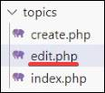
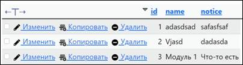

Задача урока: выполнить работу с
административной панелью, сделать настройку категорий и их удаление.
На занятии мы
узнаем:
1.
Как работать с функциями по
категориям.
2.
Как выполнить настройку
категорий и их привязку к БД.
Панель администратора. Работа с
категориями
Займемся созданием
категорий. Переходим на сайт нашей базы данных, авторизуемся посредством логина
и пароля (рис. 13.1).
Рис. 13.1. Процесс авторизации
Создаем новую таблицу в
базе socialsite. Даем название таблице: «categories» (рис. 13.2).

Рис. 13.2. Создание таблицы
Заполняем поля следующим
образом:
|
Имя |
Тип |
Длина |
Индекс |
A_I |
|
id |
INT |
12 |
PRIMARY |
+ |
|
Name |
VARCHAR |
121 |
UNIQUE |
|
|
Notice |
TEXT |
|
|
|
Обязательное условие – выставить для NAME индекс UNIQUE, дабы избавиться от категорий с одинаковым
названием. Значение Notice же будет примечанием к разделу или описанием (рис.
13.3).
Рис. 13.3. Обязательные поля индекса
Нажимаем на кнопку «сохранить»
(рис. 13.4).
Рис. 13.4. Сохранение таблицы
После обработки результата
появится структура таблицы categories (рис. 13.5).
Рис. 13.5. Структура полученной таблицы
Переходим по пути «socialsite/application/contollers» и создаем файл topics.php (рис. 13.6).
Рис. 13.6. Создание файла topics.php
Связываем topics.php
с database/db.php
с помощью include. То же самое сделаем для topics/create.php с controllers/topics.php (рис. 13.7).
Рис. 13.7. Подключение файлов
Зададим имена (рис. 13.8).
Рис. 13.8. Добавление имени
Входным окнам в файле create.php даем имена name и notice, изменяем имя кнопки на topics-create для дальнейшего обращения по имени в случае
нажатия. Не забываем удалить тип email для name. Возвращаемся в topics.php (рис. 13.9).
Рис. 13.9. Добавление имен
Копируем код для
регистрации из «users.php» и вставляем в «topics» (рис. 13.10).
Рис. 13.10. Копирование кода
Изменяем в create.php имя переменных, а также удаляем или комментируем session_start(). Инициализация происходит в файле db.php (рис. 13.11).
Рис. 13.11. Закомментирование сессии
Изменим название кнопки и
добавим printUser (рис. 13.12).
Рис. 13.12. Название кнопки
После этого вернемся на localhost и нажмем на кнопку «Опубликовать» (рис. 13.13).
Рис. 13.13. Нажатие кнопки
Публикация категории
После загрузки страницы
выполнится printUser. В методе POST мы получим массив, в котором содержатся имя, примечание и нажатие на
кнопку topics-create, но отсутствуют значения (рис. 13.14).
Рис. 13.14. Массив
В create.php удалим тип «email» (рис. 13.15).
Рис. 13.15. Удаление типа
Добавим категорию с любым
названием и содержанием (рис. 13.16).
Рис. 13.16. Добавление категории
После публикации появится
массив с введенными значениями (рис. 13.17).
Рис. 13.17. Массив для отправки в БД
Массив
со значениями. Изменим
комментарий и закомментируем функцию printUser (рис. 13.18).
Рис. 13.18. Комментирование
Следующие строчки удалим
(рис. 13.19) и заменим их следующим (рис. 13.20).
Рис. 13.19. Удаление строк
Рис. 13.20. Написание строк
Меняем поля и удаляем elseif, поскольку проверка на пароль в разделе
категории не требуется (рис. 13.21).
Рис. 13.21. Замена полей
В else изменим выделенное и удалим строчку с
хешированием пароля (рис. 13.22).
Рис. 13.22. Изменение полей
Удалим строчку userAuth и изменим предшествующие (рис. 13.23).
Рис. 13.23. Изменение и удаление полей
Последний else изменяем следующим образом. Теперь при
выполнении всех условий в таблице категорий появится новое значение. Оно будет
использовать введенные нами данные и имена и примечание к topic (рис. 13.24).
Рис. 13.24. Добавление полей
Переходим на страницу create.php и пропишем вывод для сообщений (рис. 13.25).
Рис. 13.25. Вывод сообщения
Вносим правки в create.php для корректного получения и обработки значения в имени (рис. 13.26).
Рис. 13.26. Внесение изменений
Возвращаемся в topics, напишем header для удобства работы (рис. 13.27).
Рис. 13.27. Добавление строки
Пока мы здесь,
создадим сообщение ошибки и пропишем информацию обо всех категориях (рис. 13.28).
Рис. 13.28. Объявление переменных
Связываем admin/topics/index.php с
application/tcontollers/topics.php (рис. 13.29).
Рис. 13.29. Подключение к файлу
Удалим
информацию о лишних модулях и их дубликатах в файле index.php (рис. 13.30).

Рис. 13.30. Удаление
Создадим
функцию для перебора всех значений таблицы категорий и выведем инфорацию о них,
дабы не прописывать информацию о модулях вручную, как делали это ранее. Не
забываем прибавить к ключу дополнительное значение для корректного обращения по
индексу к базе данных. Указываем все необходимые обращения, такие как имя и
идентификатор (рис. 13.31).
Рис. 13.31. Редактирование полей
Создадим файл
edit.php по пути socialsite/admin/topics. Копируем содержимое create.php по тому же пути (рис. 13.32).

Рис. 13.32. Создание файла edit.php
Вернемся к
контроллеру topics.php. Внесем дополнение в код, чтобы
иметь возможность редактировать уже созданные ранее категории (рис. 13.33).
Рис. 13.33. Написание кода
В файле «index.php» изменим размеры нескольких
колонок (рис.
13.34).
Рис. 13.34. Изменение колонок
Вносим
последние правки в edit.php для удобства понимания
категории, с которой ведется работа (рис. 13.35).
Рис. 13.35. Изменение заголовка
Изменим
«добавление» на «редактирование» категории.
Отредактируем
название формы и имена кнопок, а также создадим скрытое присваивание id записи (рис. 13.36).
Рис. 13.36. Редактирование полей
Попробуем
создать категорию из панели администратора. В базе данных появилась новая
запись. Перейдем на сайт и заметим, что наши посты отображаются корректно (рис. 13.37 – 13.38).

Рис. 13.37. Отображение категорий в таблице
базы данных
Рис. 13.38. Корректное отображение постов в
панели категорий
Панель администратора. Редактирование
и удаление категорий
Произведем
копирование части кода из функции по созданию категории в функцию по её
редактированию, а также удалению. Для этого вернемся в файл contollers/topics.php (рис. 13.39).
Рис. 13.39. Файл
«topics.php»
Скопируем
необходимый фрагмент и изменим его под наши нужды в редактировании, изменяя
имена методов и ключевые слова для обращения. Таким образом мы сформируем две
полноценно работающие функции: удаления и редактирования категории. Метод update обеспечит обновление, а метод delete – удаление (при
необходимости), это позволит полноценно модерировать раздел.
Не
забудем при этом изменить в topics/index.php строчку с удалением, указав в ссылке
обращение по del_id, передавая аргументом id категории для удаления из базы данных
(рис. 13.40).
Рис. 13.40. Изменение ссылок
Изменение
пустой ссылки на вызов функции удаления в index.php. Добавление передачи id при редактировании и удалении (рис.
13.41).
Рис. 13.41. Передача данных в
параметры
Добавление $id для корректной отработки запроса метода GET (рис. 13.42).
|
|
Метод «mb_strlen» - получает длину строки. |
Рис. 13.42. Добавление кода
Код
для редактирования функции. Методом update
подставляем новые данные о названии и примечании категории, полученной ранее по
клику на кнопку edit с
сайта. Данные вводятся пользователем (рис. 13.43).
Рис. 13.43. Добавление кода
Код для удаления информации о
категории из базы. Получаем id
записи в базе данных категорий при нажатии кнопки delete с сайта, в дальнейшем уничтожая запись
из хранения по уникальному номеру[id].
Переходим
на сайт. Проверяем работу методов путем нажатия на кнопки edit & delete. Смещаемся на страницу базы данных и
проверяем редактирование категории (рис. 13.44 – 13.46).
Рис. 13.44. Название категорий
Рис. 13.45. Редактирование
категорий
Рис. 13.46. Категории в базе
данных
Теперь
попробуем удаление (рис. 13.47 – 13.49).
Рис. 13.47. Категории в базе
данных
Рис. 13.48. Удаление категории
Рис. 13.49. Категории в базе
данных
На этом тринадцатое занятие
окончено!
В рамках этого занятия мы реализовали категории в
административной панели и взаимодействие с ними.
На следующем занятии мы подготовим вывод категорий на главной странице и переключение между
ними посредством связи в базе данных.
После прохождения каждого занятия рекомендуем повторить все термины,
которые были изучены, а также закрепить пройденный материал, ответив на
контрольные вопросы.
|
Это нужно запомнить |
|
|
|
Метод «mb_strlen» - получает длину строки. |
Контрольные вопросы
1. Как
создать скрытый <input>?
2. С какого значения индекса начинается массив?
3. Что такое ассоциативный массив?